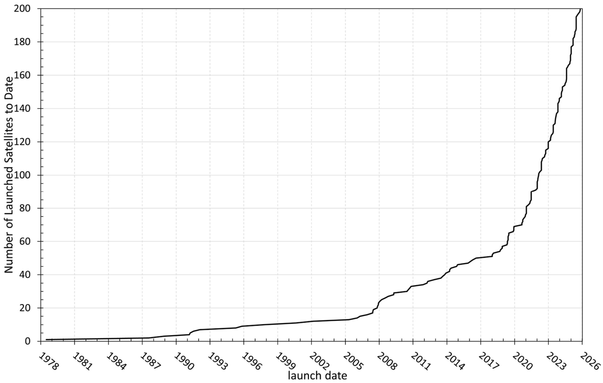

|
Содержание
|
Системы съёмки Земли из космоса
В своём развитии радиолокационная съёмка Земли прошла несколько этапов.
Первые системы радиолокационного наблюдения размещались на самолётах и по типу обзора поверхности
относились к панорамным. Они характеризовались низким пространственным разрешением по азимуту
(сотни метров) и использовались для обнаружения и сопровождения точечных объектов, для целей навигации и др.
На смену им пришли самолётные радиолокаторы бокового обзора (РБО). Съёмка осуществлялась
вдольфюзеляжными антеннами длиной 5-6 м, при этом пространственное разрешение по азимуту достигало 30-50 м.
Материалы такой съёмки использовались для наблюдения ледовой обстановки (например, РБО «Торос» в начале
1970-х гг.), геологической разведки и различных научных исследований.
Первые космические РБО использовались для целей морской разведки (например, 28 космических
аппаратов УС-АМ, 1971-1988 гг.). Расширение функций космических РБО было достигнуто в рамках программы
«Океан»: в 1983 г. был запущен первый космический аппарат (КА) «Космос-1500», материалы съёмки с которого
использовались для исследования Мирового океана, морских льдов и др. Всего в рамках программы «Океан»
существовало 7 КА, каждый из которых был оснащён радиолокационной системой бокового обзора, последний
аппарат прекратил функционировать в 2000 году.
В настоящее время космическая съёмка Земли в радиоволновом диапазоне осуществляется с использованием
радиолокаторов с синтезированной апертурой (РСА), основным отличием которых от РБО является
возможность достижения высокого пространственного разрешения путём когерентной обработки сигналов, принятых
в процессе движения космического аппарата. История съёмки Земли из космоса РСА началась с запуска
американской системы Seasat в 1978 г. С тех пор происходило быстрое увеличение числа систем, ведущих
радиолокационную съёмку: разными странами был произведён запуск более десяти спутников. В
статье приведён обзор
космических аппаратов с радиолокаторами с синтезированной апертурой, запущенных к 2025 г, данные которых широко применяются в
исследованиях Земли.

Общее количество запущенных спутников с РСА по годам. Источник - Evolution of Spaceborne SAR Missions in Earth Orbit
Радиолокационная съёмка других небесных тел
Отдельно стоит отметить, что радиолокационная съёмка используется не только для исследования
поверхности Земли, но и для изучения и картографирования других небесных тел, имеющих плотную атмосферу
(Венера, Титан), которая ограничивает возможность применения съёмочных систем оптического диапазона.
Радиолокационная съёмка Венеры осуществлялась космическими аппаратами Pioneer
Venus Orbiter (США, 1978-1992 гг.), Венера-15, -16 (СССР, 1983-85 гг.), Magellan (США, 1989-1994 гг.). По результатам съёмки советскими аппаратами в
1989 г. был издан Атлас поверхности Венеры, включающий гипсометрические, геоморфологические и
другие карты.
По материалам радиолокационной съёмки миссии Cassini–Huygens (США, ЕС и Италия, 1997-2017) на поверхности спутника Сатурна
Титан были были выявлены углеводородные озёра. Для него также был составлен ряд карт: высоты поверхности,
тектоническая, геоморфологическая и другие.
Наверх
|